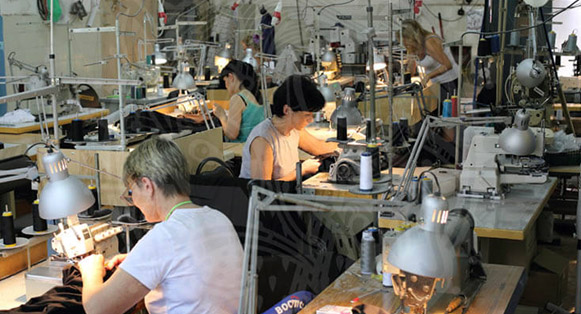

ИНН 7719765876
ОГРН 1107746985554
Москва. 21 сотрудник

ООО "СИННЕР-ВИАР" существует с 2010 года занимается производством
и торговлей молодежной одежды и аксессуаров под собственным брендом,
изготавливает на заказ оптовые партии спортивной одежды.
Цеха по пошиву одежды, изготовлению аксессуаров, нанесению изображений;
2 брендовых магазина в центре Москвы, около полусотни магазинов-партнеров
по всей России. Бар на Авиамоторной 47. Интернет-магазин и оптовый склад.
Планы на ближайшие два года
Открыть еще три фирменных магазина и трехкратно нарастить количество дистрибьютеров в регионах.
На продажах продукции ООО «Синнер-виар» кризис в настоящее время не сказывается (вся продукция изготавливается в Москве, что позволило избежать роста цен и дало конкурентное преимущество перед аналогичной одеждой иностранного производства).
Ранее с инвесторами работали, но впечатления остались не слишком благоприятные. МФО «Инкассо» на фоне своих коллег выгодно выделяются конструктивным подходом к бизнес-проектам, широтой взглядов и высоким профессионализмом.
Обороты за 2015 год составили 102 миллиона рублей, что превышает предыдущий показатель на 18 %.
Маржинальность инвестиций в проект для МФО «Инкассо» - 65 %
Дмитрий Касаткин, собственник ООО «Синнер-виар»:
«Помимо „Синнер-виар“ у меня есть еще несколько компаний, работающих по другим направлениям, и с инвесторами я знаком не понаслышке. Самое распространенное их качество – жадность. Причем жадность в ущерб всем (в том числе и себе). „Инкассо“ в этом плане намного умнее, честнее и профессиональнее большинства своих коллег. Конечно, прибыль для своих инвесторов они не упустят, но длительные взаимовыгодные отношения, связанные с успешным развитием бизнеса, для них куда интереснее, чем разовый „куш“ за счет „задушенного“ предприятия.»